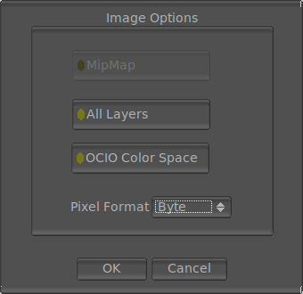

The File Save ImageMagick Options

The File Save ImageMagick options allows you to select options of how mrViewer saves the formats supported by ImageMagick. The most common formats would be PNG, TIFF and Photoshop PSD. The window appears whenever you try to save a format supported by imagemagick (determined by its extension).
You can choose to save the ACESclip Metadata (all CTL transforms) into a similarly named file to your wand file. This file will be read in automatically once you load the imagemagick wand file or sequence.
Some formats of ImageMagick support multiple layers and selecting saving all layers will allow you to save all layers of the image loaded. Currently, the formats that support multiple layers are TIFF, MIFF and PSD. If you select a format that does not support layers like PNG, you will get additional images saved for each layer.
Here you can also select the pixel depth, which can be char, short, float or double. While not all formats support all depths, char and short are pretty common. The gamma value, as used in OpenEXR for example, will get baked in.